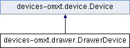

This is largely copied from the OMX drawer code. More...
Inheritance diagram for devices-omxt.drawer.DrawerDevice:

Public Member Functions | |
| def | getHandlers |
| Generate a list of DeviceHandlers representing the various capabilities we are responsible for. | |
 Public Member Functions inherited from devices-omxt.device.Device Public Member Functions inherited from devices-omxt.device.Device | |
| def | __init__ |
| def | initialize |
| Perform any necessary initialization (e.g. | |
| def | makeUI |
| Construct any special UI the Device needs. | |
| def | performSubscriptions |
| Subscribe to any events we care about. | |
| def | makeInitialPublications |
| Publish any needed information. | |
| def | finalizeInitialization |
| Do any final actions needed, now that all of the devices are set up and all initial publications and subscriptions have been made. | |
| def | getIsActive |
| Simple getter. | |
| def | shutdown |
| Debugging function: shutdown the device preparatory to reloading the module it is contained in. | |
| def | initWithHandlers |
| Debugging function: re-initialize the device with the specified list of handlers. | |
Additional Inherited Members | |
| Public Attributes inherited from devices-omxt.device.Device | |
| isActive | |
| Set to False to disable this device. | |
| priority | |
| Priority for initializing this device. | |
Detailed Description
This is largely copied from the OMX drawer code.
OMXT doesn't have drawers in the standard sense though, so this is mostly just fake.
Member Function Documentation
| def devices-omxt.drawer.DrawerDevice.getHandlers | ( | self | ) |
Generate a list of DeviceHandlers representing the various capabilities we are responsible for.
Each DeviceHandler represents an abstract bit of hardware – for example, a generic camera, or a stage mover along a single axis, or a light source. Take a look at the "handlers/deviceHandler.py" file for more information.
Reimplemented from devices-omxt.device.Device.
The documentation for this class was generated from the following file:
- devices-omxt/drawer.py